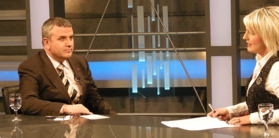
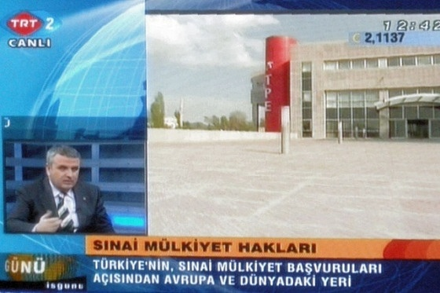

|
KOSGEB Baþkan Vekili Mustafa KAPLAN konuþmasýnda þunlarý söyledi;
"Uygulanacak bu projenin; Ar-Ge ve yenilik yapma ile yeniliðin tescili anlamýnda KOBÝ'lerde farkýndalýk oluþturulmasý ve bu konularda bilgilendirilmeleri anlamýnda hayýrlý bir hizmet olacaðýný düþünüyorum...
Özellikle son dönemlerde kriz ile daha açýk bir þekilde ortaya çýkmýþtýr ki küreselleþmenin de etkisiyle pazarlar daralmakta, rekabet avantajý saðlamak için yeni bir þeyleri ortaya koymak gerekmektedir. Yeniliði tüm faaliyetlerin odaðýna yerleþtirmeyen KOBÝ'lerin maliyet bazlý rekabet avantajý kazanma stratejilerinin baþarýlý olmasý pek mümkün gözükmemektedir."
TSE Baþkaný ve KSO Yönetim Kurulu Baþkaný Tahir BÜYÜKHELVACIGÝL ise konuþmasýnda þunlarý söyledi;
"Bugün Konya, yaþanan küresel ve ulusal bütün olumsuzluklara raðmen 30 bini aþkýn KOBÝ'siyle, üretmeyi görev bilen fedakar sanayicisiyle, Anadolu'nun üretim merkezi haline gelmiþtir. Konya, 130 ülkeye 1,5 milyar dolarýn üzerinden ihracat gerçekleþtirmektedir. Her fýrsatta söylediðimiz gibi, bu rakamlar Konya'nýn gerçek potansiyelini yansýtmamaktadýr. Ancak biz baþarýnýn bir tesadüf olmadýðýný, istikrarlý ve azimli bir bilincin sonucu olduðuna inanýyoruz. Bu açýdan bakýldýðýnda Konya'nýn yakaladýðý baþarý küçümsenecek bir baþarý deðil, örnek bir geliþme modeli olduðuna inanýyoruz.
50 firmamýza bu yýl boyunca ücretsiz danýþanlýk hizmetinin saðlanacaðý Hezarfen Projesi'nin Konya'da baþarýlý olacaðýna yürekten inanýyorum.
Küresel rekabetin hýzla geliþtiði ve deðiþtiði günümüzde iþletmelerimiz, þirketlerimiz bilgiye sahip olmalýdýr. Zira bilgi bugün dünyada güçtür. Bu gücü kullanmayý bilmeliyiz. Bilgiye sahip olan iþletmelerimiz ve þirketlerimiz rakipleri karþýsýnda daha etkili direnç gösterebilirler. Akýllý insanlar baþka insanlarýn aklýndan istifade eder. Aklýmýzý kullanmasýný bilmeliyiz. 'Küçük olsun, benim olsun' devri bitmiþtir."
Ýlgili haber:
TRT2'de 03 Þubat 2009 günü yayýnlanan Ýlknur ERTUGAY'ýn hazýrlayýp sunduðu Ýþ Günü programýna canlý yayýn konuðu olarak katýlan TPE Baþkaný Prof. Dr. Habip ASAN, sýnai mülkiyet haklarý ve Türk Patent Enstitüsü'nün çalýþmalarý hakkýnda deðerlendirmelerde bulundu.

Prof.Dr. Habip ASAN "Sanayi ve Ticaret Odalarý ve üniversiteler baþta olmak üzere çeþitli eðitim faaliyetleri düzenlenmiþtir. KOSGEB, MKE, TOBB, TÜBÝTAK, ASELSAN, TAI gibi kuruluþlarýmýzda görevli binin üzerinde uzman ve araþtýrmacýya kapsamlý eðitimler verilmiþtir. Böylece, bu kurumlarýn da tanýtým ve bilinçlendirme faaliyetlerine katýlmasý saðlanmýþtýr. Bunun yaný sýra geniþ kitlelere ulaþabilmek amacýyla Ýzmir ve CEBIT gibi uluslararasý fuarlara düzenli olarak katýlým saðlanmaktadýr" dedi.
Prof. Dr. ASAN, 2008 yýlýnda yerli baþvurularda yaklaþýk %25 artýþ yaþandýðýný, 2007 yýlýnda artýþ oranýnýn yaklaþýk %70 olarak gerçekleþtiðini belirterek dünya ortalamasýnýn kat be kat üzerindeki bu artýþlarýn mutlak sayýlarý da yukarý çektiðini, 1995'te 200 olan yerli baþvuru sayýsýnýn 5400'e ulaþtýðýný söyleyerek yerli baþvurularda 25 katlýk bir artýþ yaþandýðýna dikkat çekti.

Prof.Dr. Habip ASAN Türk Patent Enstitüsü'nün, patentlerin deðerlemesinin yapýlmasý ve sanayiye kazandýrýlmasý amacýyla kurmayý planladýðý "Patent Deðerlendirme Ajansý" ile ülkemiz ekonomisi ve sanayinin rekabet gücünü artýrmak için ilgili sektörlerle yakýn iþbirliði içinde tasarým politikalarý ve programlarý uygulamak ve eðitim politikalarý oluþturmak amacýyla kurulmasý planlanan "Türk Tasarým Konseyi" hakkýnda bilgi verdi...
Kaynaklar:
|